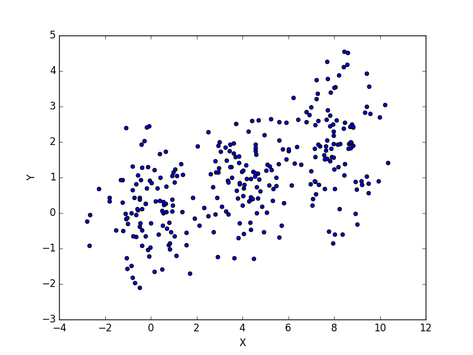

KMeans - An Introduction to Clustering
March 18, 2017Machine learning is one of the current buzzwords in the world of analytics. Everyone seems to think it is a silver bullet for solving all the problems that face businesses. This is clearly not true, and it's also one of many misconceptions about what machine learning can do. Thus, as I've been transitioning into teaching machine learning techniques, one of the challenges I've wanted to take on is making an accessible introduction to some of the more common algorithms and what they can do. This is part 1 of that series, and today we'll be looking at Kmeans. An example of using Kmeans to find clusters in data is visualized below, to prime your mind for what you'll be learning. This example shows Kmeans iterating through different steps of analyzing the data, getting closer and closer to finding the real clusters (which it does in the last frame of the animation). In each step, it colors each point by what cluster it currently thinks the point belongs to. The X's represent the clusters.

Kmeans is a clustering algorithm. Clustering algorithms do roughly what you'd expect, they take in data and create/find clusters (i.e. groups) within the data. We represent data in vector spaces, which can have any number of dimensions, depending on the dataset. For the example above, I've shown a 2D vector space (Y vs X). A clustering algorithm methodically looks through the data and tries to determine which of the data are like the others, using this vector space to compute distance between points. Once it decides that, it labels the data appropriately. It might sort through the data and say, "hey, there are 3 distinct groups of data, so I'm going to say there's group A, B, and C. Points 1, 2, 5, 6, 11, and 13 belong to group A. Points 3, 7, 8, and 10 belong to group B. The rest belong to group C."
This is extremely useful. For example, let's say an insurance company wants to decide whether to insure a person. They can let a machine compare that person to literally everyone else they've ever insured based on that person's health data and income date. Then it can decide, "this person is most like a healthy, young male that doesn't miss payments... we should insure him!" All of that can be automatic, and the comparison can be done against millions of other customers because it's all automated. There are tons of uses like this for clustering. To explain exactly how this works, I've prepared a set of slides as a self-guided study of the Kmeans algorithm's nuts-and-bolts.
A PDF Introduction to KMeans
You can also find an example implementation of Kmeans and how it can be used to play with the colors in images here, which I used to make outputs like this!